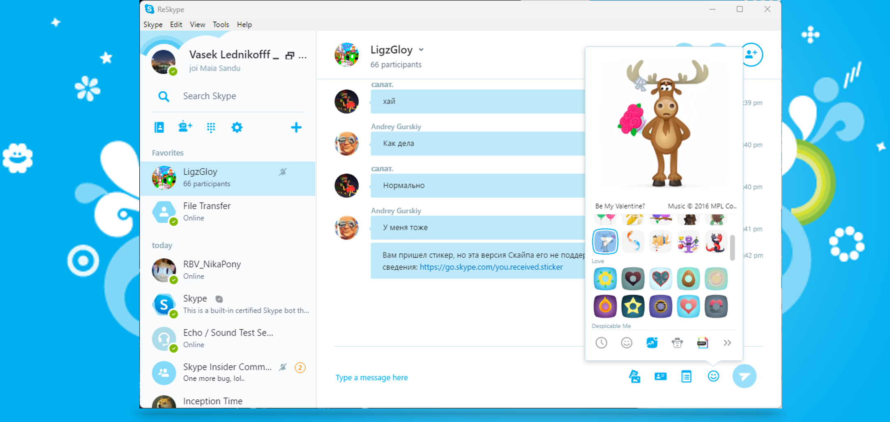

ReSkype 3.2

Windows 7 и выше
Обновление РеСкайпа вышедшее 20 августа 2023 года
Был опубликован на сайте Discord-сервера Fieme в этом сообщении
Что нового?
- Изменен цвет пользовательского интерфейса, чтобы следовать дизайну Skype 7.24.
- Добавлена возможность не отправлять индикатор набора текста.
- Добавлена кнопка, чтобы сделать вызов всплывающим. Читать более
!Внимание!
Вход в РеСкайп недоступен из-за изменения механизма получения X-SkypeToken в октябре 2023 года. Как исправить
Технические детали:
Версия 3.2. OS Windows